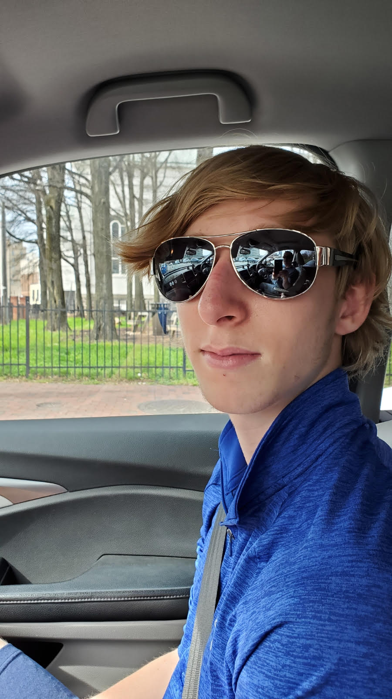

My name is Sevie Schulhoff and I am currrently a Junior at the Friends School of Baltimore. I am 16 and have attended FSB since 1st grade. Both my brother and my dad have graduated from FSB. My hobbies are video games, reading, playing piano and harmonica, and playing sports. I like biking and usually bike on the weekends with my friends. I am currently learning how to use Unity and plan on making a game.
